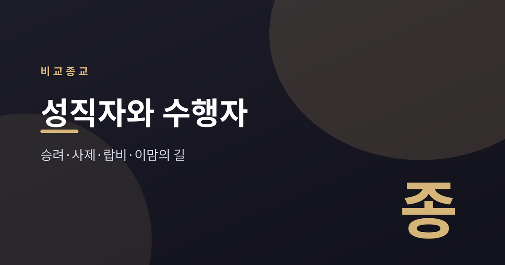
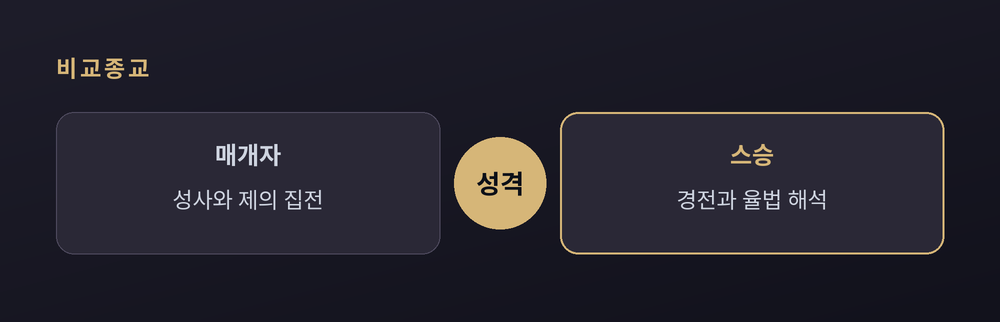
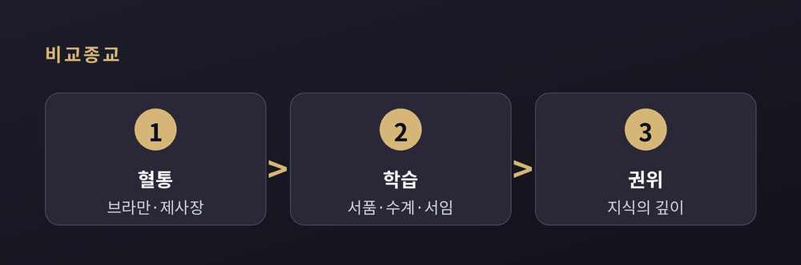
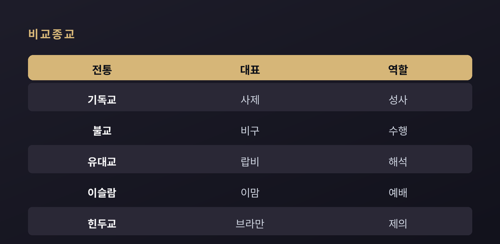

승려·사제·랍비·이맘은 어떤 길을 걷나

사제, 승려, 랍비, 이맘. 이름은 달라도 이들은 공동체를 예배로 이끌고 경전을 풀이한다. 그러나 그 자격과 권위의 성격은 전통마다 사뭇 다르다. 이 글은 어느 신앙의 우열을 가리지 않고, 종교학의 시선으로 그 길을 나란히 살핀다.

성직자의 성격은 크게 둘로 갈린다. 하나는 신과 인간을 잇는 매개자다. 가톨릭 사제와 힌두교 브라만 사제는 성사와 제의를 집전하며 이 역할을 맡는다. 다른 하나는 가르치는 스승이다. 유대교 랍비는 본래 '나의 스승'을 뜻하며, 율법을 판단하는 학자에서 비롯되었다. 이슬람의 울라마 또한 법과 신학을 다루는 학인 계층으로 자리 잡았고, 그 가운데 법적 견해를 내는 이를 무프티라 부른다. 개신교와 이슬람은 인간과 신 사이에 중개자를 두지 않는다는 관점을 강조한다. 반면 가톨릭·정교회 전통은 성사를 통한 은총의 전달을 중시한다. 어느 편이 옳다기보다, 성스러움에 다가서는 서로 다른 문법으로 이해된다.
지위에 이르는 문은 전통마다 다르다.

브라만 사제직과 고대 유대교 제사장은 혈통으로 이어졌다. 반면 가톨릭 서품, 랍비 서임(세미카), 불교 수계는 오랜 학습과 부름을 통해 열린다. 불교의 경우 스무 살 이전에는 사미로 출가하고, 그 뒤 구족계를 받아 정식 비구·비구니가 된다. 승가는 계율을 지키며 수행하는 한편, 가르침을 잇는 스승의 소임도 함께 진다. 이슬람은 공식 성직 서품 제도가 없다는 견해가 일반적이다. 성인 무슬림이면 예배를 이끄는 이맘이 될 수 있고, 권위는 직위가 아니라 지식의 깊이에서 나온다.

전통마다 호칭과 역할, 서임 방식, 독신 규범이 다르다. 아래 표는 그 갈래를 간추린 것이다. 같은 표라도 종파에 따라 세부는 갈린다.
| 전통 | 대표 | 핵심 역할 |
|---|---|---|
| 기독교 | 사제·목사 | 성사·설교 |
| 불교 | 비구·비구니 | 수행·전법 |
| 유대교 | 랍비 | 율법 해석 |
| 이슬람 | 이맘 | 예배 인도 |
| 힌두교 | 브라만 | 제의 집전 |
독신 규범도 갈린다. 라틴 가톨릭은 사제의 독신을 의무로 삼지만, 동방 교회와 동방 가톨릭은 기혼자의 서품을 허용하되 주교는 대개 수도자 가운데서 세운다. 개신교 목사, 유대교 랍비, 이슬람 이맘은 대개 혼인한다. 불교 승려는 계율에 따라 청정한 삶을 지향한다. 힌두교에서는 브라만 사제가 제의를 맡는 한편, 구루가 스승으로서 경전과 삶의 길을 일러 준다. 유교에는 별도의 성직 계급이 없으며, 선비와 가문이 조상 제례를 주관해 왔다. 근래에는 사제직의 세습 관행을 완화하려는 흐름도 나타난다.
이름과 길은 달라도, 이들은 저마다의 방식으로 공동체를 붙든다. "다른 문을 지나도, 같은 마을을 지킨다." 그 길들을 나란히 볼 때, 인간이 성스러움과 맺는 관계의 폭이 비로소 드러난다.